Empezando con R
Introducción
R es un lenguaje de programación para computación estadistica y visualización de datos. R es un software de código abierto y software libre. El lenguaje se ha desarrollado desde el principio de los años 90’s y ha tenido una evolución constante, recientemente se ha utilizado también para el desarrollo de aplicaciones como la ciencia de datos, el aprendizaje automático o la inteligencia artificial.
R fue inspirado por el lenguaje de programación S, lo que se ve pues después de S sigue R.
Parte del uso extendido de R, es gracias a su versatilidad las cuales provienen de las contribuciones de las comunidades científicas y de desarrolladores de software que crean y publican paquetes que extienden las capacidades básicas del lenguaje R que están rigurosamente documentados. El ecosistema de R permite el aprovechamiento continuo del conocimiento y de la técnica para facilitar las tareas de procesamiento de información en prácticamente cualquier campo de trabajo.
Instalación
Para hacer uso de R vamos a installar R en nuestro sistema y después vamos a instalar RStudio el cual es un software que nos facilita la interacción con los elementos de R.
Instalación R
Paso 1: Descargar R
- R es el lenguaje de programación en sí mismo. Primero, necesitamos instalarlo.
- Abre tu navegador web y ve al sitio web oficial de CRAN (The Comprehensive R Archive Network): https://cran.r-project.org/
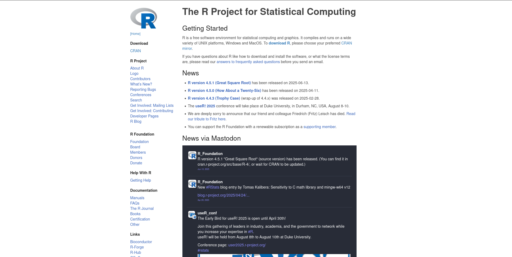
Imagen de Página principal de CRAN En la sección “Download, Packages”, haz clic en el enlace correspondiente a tu sistema operativo: * Windows: Haz clic en “Download R for Windows”. 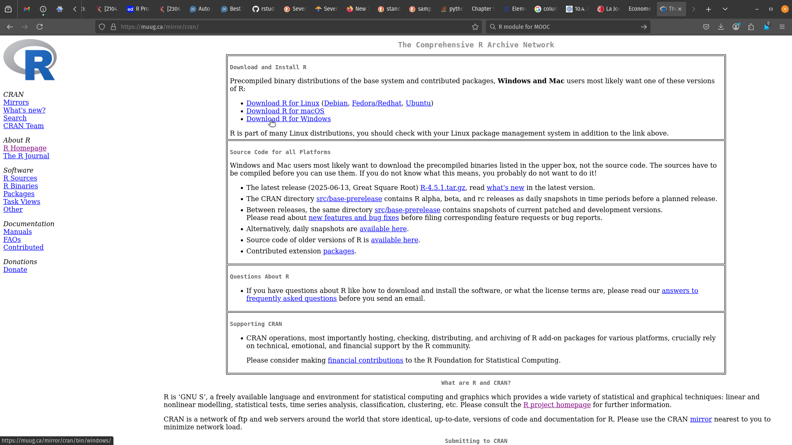
* macOS: Haz clic en "Download R for macOS". * Linux: Haz clic en "Download R for Linux" y sigue las instrucciones específicas para tu distribución de Linux.*Para Windows: Haz clic en “base”. 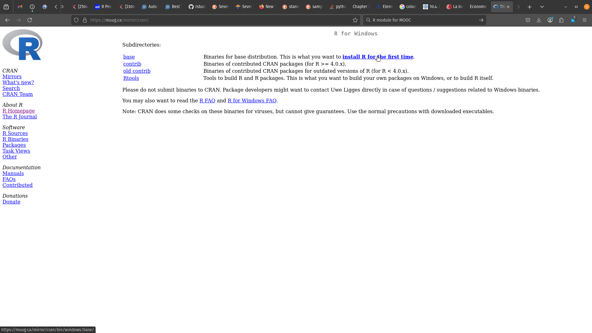
Para Windows: Haz clic en el enlace para descargar la última versión de R (por ejemplo, “Download R 4.5.1 for Windows”). 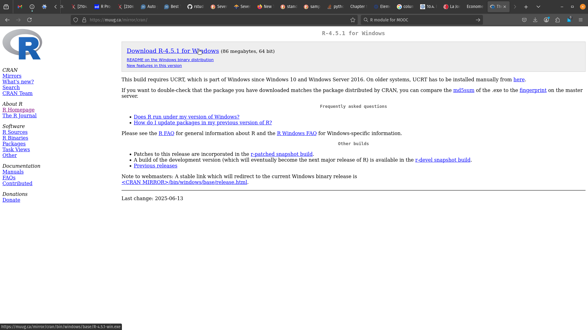
Una vez que la descarga se complete, abre el archivo ejecutable (.exe en Windows, .pkg en macOS) y sigue las instrucciones del asistente de instalación. Generalmente, puedes dejar las opciones predeterminadas.
Windows:
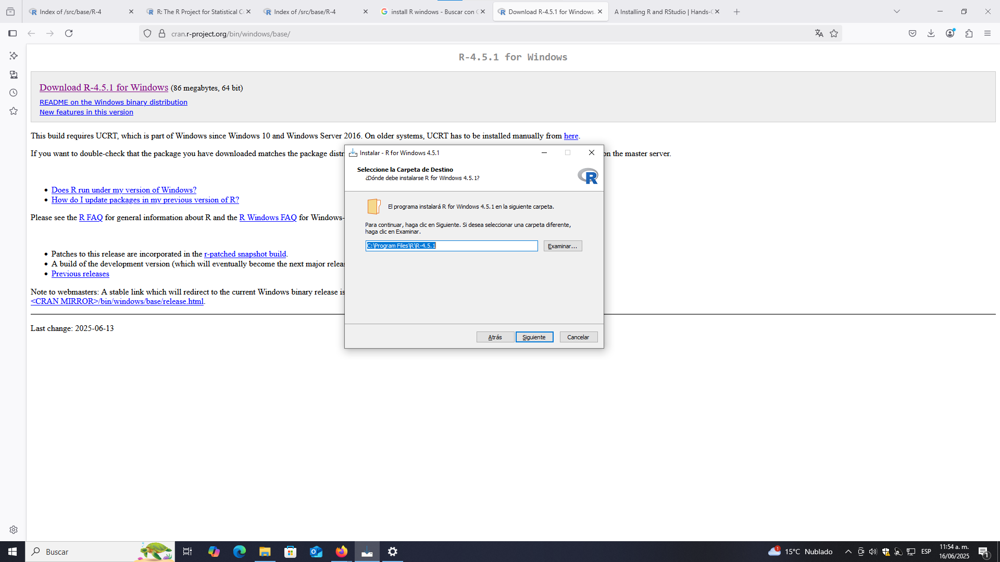
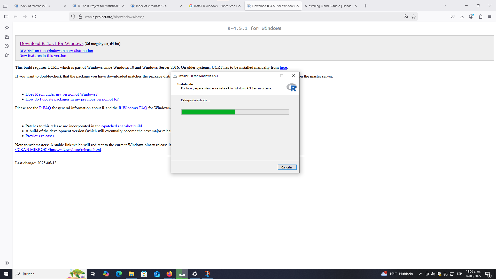
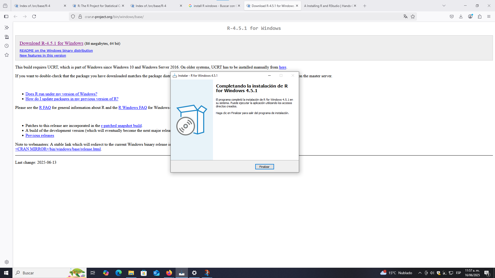
Una vez finalizada la instalación, R estará instalado en tu computadora. Puedes buscarlo en el menú de inicio (Windows) o en la carpeta de Aplicaciones (macOS) para verificar que se haya instalado correctamente.
Instalación RStudio
RStudio es un entorno de desarrollo integrado (IDE) que facilita el trabajo con R. Es muy recomendable instalarlo.
Para su instalación abre en tu navegador web y ve al sitio web oficial de RStudio: https://rstudio.com/products/rstudio/download/
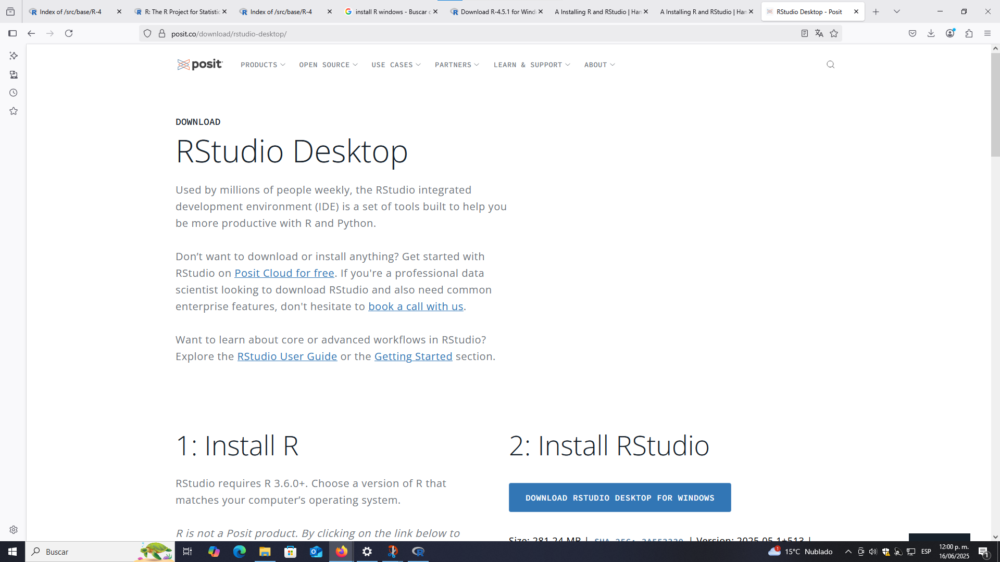
Imagen de Página de descarga de RStudio Baja hasta la sección “Install RStudio” y haz clic en el botón “Download RStudio forwindows”. 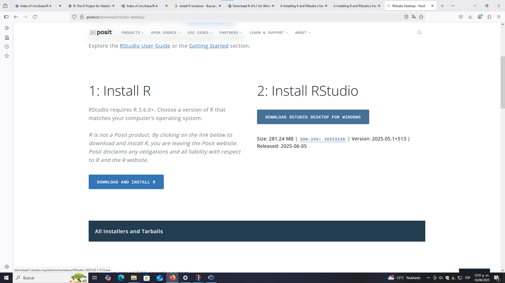
En la siguiente página, busca la sección “Installers for Supported Platforms” y descarga la versión correspondiente a tu sistema operativo:
Windows: Haz clic en el archivo .exe.
macOS: Haz clic en el archivo .dmg.
Linux : Puedes ver las instrucciones específicas para Debian o Ubuntu o descargar el archivo .deb si es aplicable.
Una vez que la descarga se complete, abre el archivo ejecutable y sigue las instrucciones del asistente de instalación. Nuevamente, generalmente puedes dejar las opciones predeterminadas.
Windows:
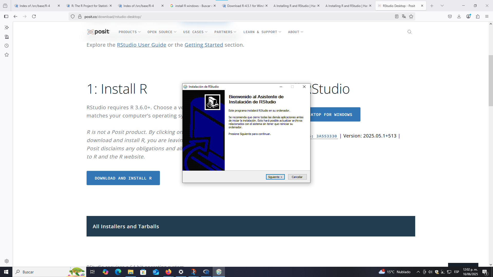
Instalacion R studio 1 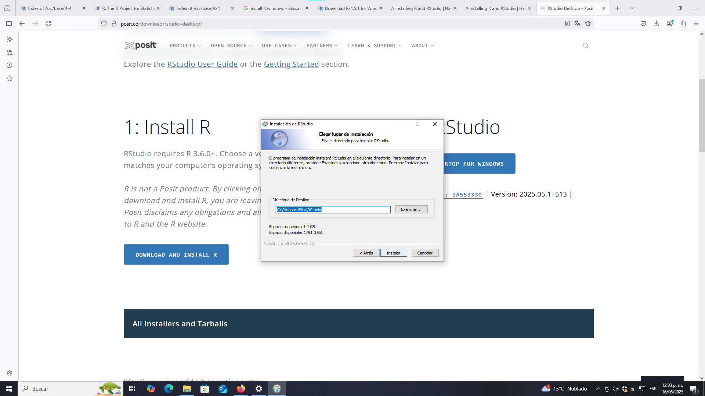
Instalacion R studio 2 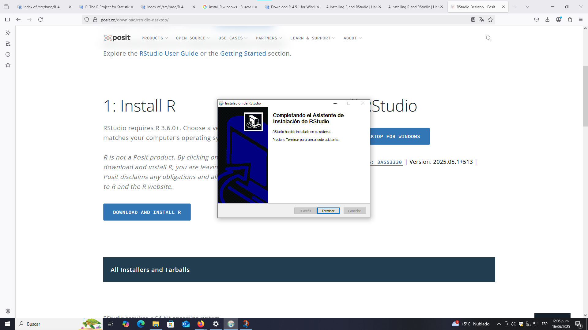
Instalacion R studio termino macOS: Arrastra el icono de RStudio a la carpeta de Aplicaciones.
Una vez finalizada la instalación, RStudio estará listo para ser utilizado. Puedes buscarlo en el menú de inicio (Windows) o en la carpeta de Aplicaciones (macOS) y abrirlo.
- Ejemplo de la interfaz de RStudio: 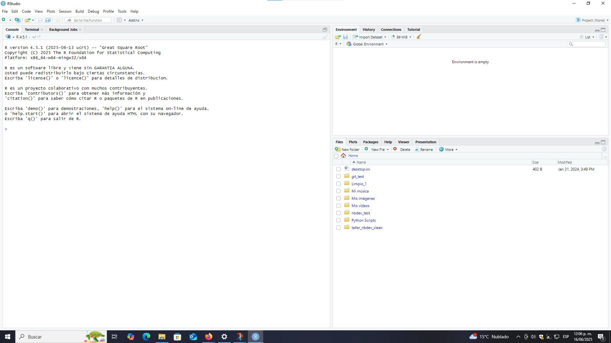
Uso básico de RStudio
RStudio es un IDE pensado especificamente para R lo que permite que aprender y trabajar dentro con R dentro de este IDE sea muy eficiente y amigable.
Al abrir RStudio, verás una interfaz dividida en varias “paneles” o “ventanas”, cada una con una función específica. Imagen de Paneles principales de RStudio
Aunque la configuración puede variar, los paneles más comunes son:
Consola (Console): Es donde puedes escribir comandos de R directamente y ver los resultados de forma inmediata. Es útil para probar líneas de código rápidas o para ejecutar scripts. * Ubicación: Generalmente en la parte inferior izquierda. * Uso: Escribe 2 + 2 y presiona Enter. Verás el resultado [1] 4.
Editor de Script (Source Editor): Aquí es donde escribes y guardas tus scripts de R (archivos .R). Es el lugar ideal para desarrollar tu código de forma organizada y reproducible.
- Uso: Puedes escribir múltiples líneas de código y luego ejecutarlas seleccionándolas y presionando Ctrl + Enter (Windows/Linux) o Cmd + Enter (macOS).
- Ubicación: Generalmente en la parte superior izquierda.
Entorno / Historial / Conexiones / Tutorial (Environment / History / Connections / Tutorial):
Entorno (Environment): Muestra todos los objetos (variables, funciones, conjuntos de datos) que has creado o cargado en tu sesión de R. Es una forma útil de ver qué datos tienes disponibles.
Historial (History): Guarda un registro de todos los comandos que has ejecutado en la consola.
Ubicación: Generalmente en la parte superior derecha.
Archivos / Plots / Paquetes / Ayuda / Visor (Files / Plots / Packages / Help / Viewer):
Archivos (Files): Un explorador de archivos que te permite navegar por los directorios de tu computadora.
Gráficos (Plots): Aquí se mostrarán todos los gráficos que generes con tu código R.
Paquetes (Packages): Te permite ver los paquetes instalados y cargar/descargar paquetes. También puedes instalar nuevos paquetes desde aquí.
Ayuda (Help): Proporciona acceso a la documentación de R y de los paquetes, lo cual es invaluable para entender cómo funcionan las funciones.
Visor (Viewer): Se utiliza para visualizar contenido web local, como documentos HTML generados por R Markdown.
Ubicación: Generalmente en la parte inferior derecha.
Obtención de ayuda en R
R es un lenguaje de programación que está completamente documentado. Es importante aprender a consultar la ayuda para entender mejor cómo utilizar las funciones de R de la mejor manera posible.
Ejecuta el siguiente chunk para obtener ayuda sobre la función for usando la función help (la ayuda aparecerá en el panel Help):
Existe otra forma común de consultar la ayuda. Selecciona o ubica el cursor en la función R.Version() y presiona la tecla F1 (no es necesario correr este chunk, la ayuda aparecerá en el panel Help) :
Ejecuta el siguiente chunk para buscar documentación relacionada con estructuras de control buscando el término "control flow" usando la función help.search (el índice de temas relacionados aparecerá en el panel Help):
Directorio de trabajo
Una buena práctica para programar en R es establecer un directorio de trabajo para almacenar todos los programas, cuadernos y datos para tener una mejor organización y facilidad al escribir códigos.
Ejecuta el siguiente chunk para ver el directorio de trabajo actual usando la función getwd:
getwd()Define el directorio de trabajo que usarás para el taller usando la función setwd, escribe entre comillas la ruta de la carpeta del taller que descargaste desde GitHub (dentro de las comillas puedes presionar la tecla Tab después de cada diagonal para definir la ruta):
# Ejemplo para definir la carpeta de trabajo en Windows:
# setwd("C:\centrogeo-taller-sigypp")
# Ejemplo para definir la carpeta de trabajo en macOS o Linux:
# setwd(dir = "/Users/Usuario/Documents/Centro Geo/centrogeo-taller-sigypp")
setwd(***)También se pueden usar los proyectos en RStudio para definir una carpeta de trabajo.
Instalación de paquetes en R
Para instalar paquetes dentro de R lo mas sencillo es utilizar la función install.packages().
A continuación vamos a instalar un paquete que nos permitira hacer Notebooks de markdown dentro de R.
install.packages("rmarkdown")Cómo funcionan los cuadernos en RMarkdown (.Rmd)?
Los cuadernos interactivos en formato RMarkdown nos permiten combinar en un mismo documento texto, imágenes, ecuaciones y código que se puede ejecutar para mostrar su resultado. RStudio sirve para crear cuadernos como éste y ejecutar de manera interactiva su código en lenguaje R (entre otros), además de que podemos documentar nuestros ejercicios para comunicar lo que hemos desarrollado a otras personas ya que un cuaderno RMarkdown se puede exportar en otros formatos más compatibles como HTML, PDF o Word.
En el siguinete link pueden enontrar una hoja donde se enuentra resumido muchas de las cosas que se pueden hacer con markdown dentro de r link
A continuacion hacemos un resumen para las cosas básicas que vamos a necesitar.
¿Qué es R Markdown?
RMarkdown es un formato de archivo que permite crear documentos dinámicos y reproducibles a partir de R. Combina:
Markdown: Un lenguaje de marcado simple para formatear texto (títulos, negritas, cursivas, listas, etc.).
Código R: Puedes insertar y ejecutar bloques de código R directamente en tu documento.
Resultados de R: Los resultados del código (tablas, gráficos, etc.) se incrustan automáticamente en el documento.
Basicos de Markdown
Encabezados
Usa el símbolo de numeral (#) seguido de un espacio para crear encabezados. El número de almohadillas indica el nivel del encabezado (del 1 al 6).
##### Encabezado 5
###### Encabezado 6Encabezado 5
Encabezado 6
Párrafos
Simplemente escribe el texto. Un párrafo se crea separando líneas de texto con una línea en blanco.
Este es el primer párrafo de mi documento.
Este es el segundo párrafo. Se separa del anterior por una línea en blanco.Cursiva y Negritas
Negritas: Usa dos asteriscos (texto) o dos guiones bajos (texto).
Cursivas: Usa un asterisco (texto) o un guion bajo (texto).
*Cursiva* y **Negritas**Cursiva y Negritas
Listas
Listas desordenadas: Usa asteriscos (*), guiones (-) o signos de suma (+) seguidos de un espacio.
Listas ordenadas: Usa números seguidos de un punto y un espacio (1.).
Cosa 1
Cosa 2
Cosa 3
- Cosa 3.1
* Cosa 1
* Cosa 2
* Cosa 3
- Cosa 3.1
Tablas
| Normal | Izquierda | Derecha | Centro |
|---------|:-----|------:|:------:|
| abc | abc | abc | abc |
| abcd | abcd | abcd | abcd |
| a | a | a | a |
| Normal | Izquierda | Derecha | Centro |
|---|---|---|---|
| abc | abc | abc | abc |
| abcd | abcd | abcd | abcd |
| a | a | a | a |
Se pueden hace muchas más cosas dentro de Markdown.
Imágenes
Usa un signo de exclamación, corchetes para el texto alternativo (que se muestra si la imagen no carga) y paréntesis para la ruta de la imagen.
Sintaxis de Code Chunks (Bloques de Código) en R Markdown
En un cuaderno de RMarkdown, los códigos en lenguaje R se escriben dentro de bloques llamados chunks. En RStudio podemos ejecutar el contenido de un chunk presionando el botón verde de reproducción llamado Run Current Chunk ó situando el cursor dentro del chunk y presionando las teclas Ctrl+Enter.
Los chunks de código o celdas se limitan haciendo uso de ``` tanto al inicio como al final.
Fuera de estos chunks, podemos escribir texto el cual podemos resaltar haciendo uso dentro del texto con simples marcadores.
```
# Esto es un codigo que se
print("queremos que esto se muestre ")
```Comentar el código
Se pueden agregar notas y comentarios a los códigos sin que se ejecuten anteponiendo #. Ejecuta la siguiente instrucción para que aparezca el mensaje "Puedo ver este texto!" sin que aparezcan los comentarios que están en la misma línea y en la siguiente:
Evaluación
La instalaión no se puede evaluar
- ¿ En que ventana se deve esccribir el comando para la instalación de paquetes en R ?
- Editor de Scripts
- Entorno
- Archivos
- Visor
- ¿ Como se soliita ayuda desde la consola de R ?
- getwd
- setwd
- help
- version
- Cual de los siguientes omandos installa la bibliotecca
ggplot2- install.packages(ggplot2)
- install.package(ggplot2)
- install.packages(‘ggplot2’)
- install.packages(ggplot2’)
- ¿ Con qué comando se cambia de directorio de trabajo en R?
- getwd
- setwd
- help
- version
- Para poner cursivas en el lenguaje Markdown ¿cuál se utiliza ?
` `* *** **``` ```
- Para poner negritas en el lenguaje Markdown ¿cuál se utiliza ?
` `* *** **``` ```
- Para segmentos de código a ejecutar en el lenguaje Markdown ¿cuál se utiliza ?
` `* *** **``` ```